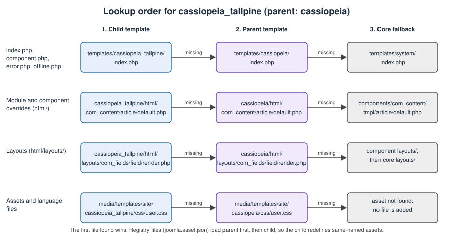

Joomla Child Templates
|
This content was generated with the assistance of AI and should be verified against the official documentation before being relied on in production. |
A child template is a small template that names another template as its parent and reuses everything it does not
replace. Instead of copying Cassiopeia and carrying the copy forward through every Joomla update, you create a folder
holding only the files that differ: a stylesheet, a handful of overrides, a language file, perhaps an index.php.
Everything else is read from the parent at request time. This page explains how to create a child template in the
Templates manager and by hand, what the two manifest elements parent and inheritable do, what a child can add,
exactly how Joomla resolves a file between child and parent (templates, overrides, layouts, assets, language files and
media), how a child differs from a copied template, and it builds the Tallpine Hiking Club’s cassiopeia_tallpine
child template step by step. It was checked against the official documentation and the 6.2 source tree on 2026-10-30.
The behaviour described is that of Joomla 6.2 (current, requiring PHP 8.3 or newer). Child templates exist since
Joomla 4.1, so everything here also applies to Joomla 5.4 (security fixes only); where 5.4 differs, the text says so.
Joomla 4.x and 3.x are end of life.
The audience is the themer and the site builder. You do not need to write PHP to make a child template that changes colours and fonts, but you do need it for new layouts. The accessibility checks that apply to any template are in Web accessibility and Colour modes, RTL and accessibility; they are not repeated here. The theory of template styles is in Templates and template styles, overrides are covered in depth in Template overrides and alternative layouts, and a template that inherits from nothing is built in Building a template from scratch.
Why child templates exist
Cassiopeia is the default site template. Its files live in templates/cassiopeia and media/templates/site/cassiopeia
and are replaced by every Joomla update, so any edit you make there disappears at the next minor release. Before
Joomla 4.1 the usual workaround was to copy the whole template, rename it and edit the copy. That is a copied
template: it works, but it freezes the parent’s markup, CSS and JavaScript at the moment of the copy. Security fixes and
accessibility improvements that Joomla later makes to Cassiopeia never reach the copy, and merging them by hand gets
harder every release.
Joomla 4.1 added child templates to the Templates manager (the method is marked @since 4.1.0 in the source). A child:
-
keeps its own folder, so core updates never touch it;
-
needs only the files that differ, because a missing file is read from the parent;
-
appears as a normal template in the Administrator, with its own styles, parameters and menu assignments;
-
keeps benefiting from fixes in the parent for every file it does not override.
Joomla 6.0 added a second core template, cassiopeia_extended, which is itself a child of Cassiopeia and adds
colour and typography settings. It is a useful reference implementation (see
Cassiopeia and Cassiopeia Extended). Material written for
Joomla 4.0 or 4.1 that calls child templates a brand-new feature should be read with that in mind: they are now the
standard, documented way to customise Cassiopeia, and a core template relies on the same mechanism. Older books and
tutorials, such as Joomla! 4 Masterclass (2023), describe the feature as brand new and link to the legacy wiki;
the current end-user documentation is the User Guide at guide.joomla.org, and the Developer Manual at manual.joomla.org
documents the manifest, although some of its template pages are still short stubs, so this page also cites the
source tree.
The two manifest elements: parent and inheritable
A template is described by templateDetails.xml. Two elements make inheritance work:
| Element | Where | Meaning |
|---|---|---|
|
In a template that may be used as a parent |
|
|
In the child |
The element name (folder name) of the parent, for example |
Joomla stores the same two values in the #__template_styles table (columns inheritable and parent), so every
template style knows its parent. At request time SiteApplication::getTemplate(true) returns an object carrying
template, inheritable and parent, and that object is what the document, the layout system, the module helper and
the asset registry consult. The rule that results is simple:
-
A template with
inheritableset, or with aparent, is a "modern" template: its static files are read frommedia/templates/site/NAMErather than fromtemplates/NAME. Templates written for Joomla 3 keep their CSS inside the template folder; Cassiopeia and every child do not. -
There is a single level of inheritance. A child names one parent, and a child is never itself inheritable. When you press Create Child Template on a template that already has a parent, the new template names the original parent, not the intermediate one.
The name of a child created in the Templates manager is always PARENT_NAME. If the parent is cassiopeia and you type
tallpine, the new element is cassiopeia_tallpine. The name you type may contain only letters, digits and
underscores; anything else is rejected with an error. That is why the Tallpine child is cassiopeia_tallpine and not
cassiopeia-tallpine.
Creating a child template in the Templates manager
The Templates manager creates the folder, the manifest and the media structure for you. The steps follow the User Guide:
-
Open System, then Site Templates under the Templates panel.
-
Select Cassiopeia Details and Files.
-
Choose Create Child Template in the toolbar.
-
Type the name. For the club,
tallpine. Leave Additional Template Styles empty unless you want to copy styles of the parent into the child (see below). -
Save, close the parent form, and open the new entry cassiopeia_tallpine Details and Files from the list.
Your account needs the core.create permission on the Templates component; without it the button reports "not
permitted". Internally the controller does the following (TemplateController::child() and TemplateModel::child()
in com_templates):
-
validates the name and checks it is not already taken;
-
builds the new template in the temporary folder (the
tmp_pathof the Global Configuration), under a name starting withtemplate_child_; -
copies the parent’s
templateDetails.xmlthere and rewrites it (see the table below); -
creates empty
htmlandmediafolders, the latter withcss,js,imagesandscsssubfolders; -
runs the normal installer with
installtypeset tofolder, which copies the files intotemplates/NAMEandmedia/templates/site/NAMEand registers the template as an extension, creating one default style named "NAME - Default".
What the rewritten manifest keeps and removes:
| Manifest part | What happens to it |
|---|---|
|
Set to |
|
Replaced by the current month and the creating user. |
|
Replaced by |
|
Replaced by a |
|
Removed. A new child has no language files and no update server. |
|
|
|
If present, |
|
Copied exactly from the parent when the child is created. The child therefore starts with the parent’s positions and with the parent’s style parameter form, but from then on its own manifest is the only one the module editor reads. |
Additional Template Styles is a list of the parent’s existing template styles. Each one you tick is copied into the
child as a new style, with the parent’s parameters, named from the language string
COM_TEMPLATES_COPY_CHILD_TEMPLATE_STYLES. It saves recreating the logo, colour and font choices of a style that is
already tuned. Menu assignments are not copied; assign the new style to menu items or make it the default yourself.
Right after creation the child contains one file, templateDetails.xml, an empty html folder and the empty media
structure. Nothing is displayed differently yet: with no index.php, no stylesheet and no override of its own, the
child renders exactly like Cassiopeia. That is the intended starting point.
Creating a child template by hand
The Templates manager is convenient on a production site, but a themer usually works in version control and builds an installable package. Write the folder yourself and zip it. For the Tallpine child, the repository contains:
cassiopeia_tallpine/
templateDetails.xml
index.php
joomla.asset.json
html/
layouts/
com_fields/
field/
render.php
mod_custom/
default.php
language/
en-GB/
tpl_cassiopeia_tallpine.ini
tpl_cassiopeia_tallpine.sys.ini
de-DE/
tpl_cassiopeia_tallpine.ini
tpl_cassiopeia_tallpine.sys.ini
media/
css/
tallpine.css
user.css
global/
custom_tallpine.css
js/
tallpine.js
images/
tallpine-mark.svgThe manifest is the only file that is strictly required. It is the same kind of file the Templates manager produces, with the pieces a hand-built child usually adds:
<?xml version="1.0" encoding="UTF-8"?>
<extension type="template" client="site" method="upgrade">
<name>cassiopeia_tallpine</name>
<version>1.0.0</version>
<creationDate>2026-10</creationDate>
<author>Tallpine Hiking Club web team</author>
<authorEmail>web@tallpine.example</authorEmail>
<copyright>(C) 2026 Tallpine Hiking Club</copyright>
<license>GNU General Public License version 2 or later</license>
<description>TPL_CASSIOPEIA_TALLPINE_XML_DESCRIPTION</description>
<!-- a child is not itself a parent -->
<inheritable>0</inheritable>
<parent>cassiopeia</parent>
<files>
<filename>index.php</filename>
<filename>joomla.asset.json</filename>
<filename>templateDetails.xml</filename>
<folder>html</folder>
</files>
<!-- installed to media/templates/site/cassiopeia_tallpine -->
<media destination="templates/site/cassiopeia_tallpine" folder="media">
<folder>css</folder>
<folder>js</folder>
<folder>images</folder>
<folder>scss</folder>
</media>
<languages folder="language">
<language tag="en-GB">en-GB/tpl_cassiopeia_tallpine.ini</language>
<language tag="en-GB">en-GB/tpl_cassiopeia_tallpine.sys.ini</language>
<language tag="de-DE">de-DE/tpl_cassiopeia_tallpine.ini</language>
<language tag="de-DE">de-DE/tpl_cassiopeia_tallpine.sys.ini</language>
</languages>
<!-- the module editor reads positions from this manifest only: list every position the template offers -->
<positions>
<position>topbar</position>
<position>below-top</position>
<position>menu</position>
<position>search</position>
<position>banner</position>
<position>top-a</position>
<position>top-b</position>
<position>main-top</position>
<position>main-bottom</position>
<position>breadcrumbs</position>
<position>sidebar-left</position>
<position>sidebar-right</position>
<position>bottom-a</position>
<position>bottom-b</position>
<position>footer</position>
<position>debug</position>
<position>error-403</position>
<position>error-404</position>
<position>trail-conditions</position>
<position>partner-strip</position>
</positions>
<config>
<fields name="params">
<fieldset name="advanced">
<field
name="brand"
type="radio"
label="TPL_CASSIOPEIA_BRAND_LABEL"
default="1"
layout="joomla.form.field.radio.switcher"
filter="options"
>
<option value="0">JNO</option>
<option value="1">JYES</option>
</field>
<field
name="logoFile"
type="media"
schemes="http,https,ftp,ftps,data,file"
validate="url"
relative="true"
default=""
label="TPL_CASSIOPEIA_LOGO_LABEL"
showon="brand:1"
/>
<field
name="siteTitle"
type="text"
default=""
label="TPL_CASSIOPEIA_TITLE"
filter="string"
showon="brand:1"
/>
<field
name="trailAlertEnabled"
type="radio"
layout="joomla.form.field.radio.switcher"
default="1"
label="TPL_CASSIOPEIA_TALLPINE_TRAIL_ALERT_LABEL"
description="TPL_CASSIOPEIA_TALLPINE_TRAIL_ALERT_DESC"
filter="options"
>
<option value="0">JNO</option>
<option value="1">JYES</option>
</field>
</fieldset>
</fields>
</config>
</extension>The manifest above is shortened for reading: a production file also repeats the parent’s other parameters (colour theme, fonts, layout width, sticky header, back-to-top link) so that the style form keeps offering them. This matters and is explained in the section on parameters below.
Install the zipped folder with System, Install, Extensions, or copy it into templates/ and use
Install, Discover. Either way Joomla registers the template, copies media/ to
media/templates/site/cassiopeia_tallpine, copies the language files, and creates a default style. For repeatable
local work, keep the working copy outside the container and mount the two live folders into the Joomla image from the
Tallpine local environment described in Local development with
Docker:
# compose.override.yaml: mount the child template into the running Joomla container
services:
joomla:
volumes:
- ./cassiopeia_tallpine:/var/www/html/templates/cassiopeia_tallpine
- ./cassiopeia_tallpine/media:/var/www/html/media/templates/site/cassiopeia_tallpineSource: Docker Official Image: joomla
With the bind mounts the template is not "installed" through the installer, so register it once from the Administrator with Install, Discover. Edits to the mounted files appear on the next request; the second mount is what makes the CSS, JavaScript and images visible at their public URL.
The lookup order
This is the central idea of the page. The figure shows where Joomla looks for each kind of file when the active
template is cassiopeia_tallpine, whose parent is cassiopeia.

The rules, taken from the 6.2 source:
-
Template entry files (
index.php,component.php,error.php,offline.php).HtmlDocument::_fetchTemplate()triestemplates/CHILD/FILE, thentemplates/PARENT/FILE, thentemplates/system/FILE. The first file that exists is rendered. A child without anindex.phptherefore renders the parent’s. -
Component view overrides (
html/com_content/article/default.php).HtmlViewadds the parent’s override folder first and the child’s last, and the search takes the last-added path first. The child wins; then the parent; then the component’s owntmplfolder. -
Module overrides (
html/mod_custom/default.php).ModuleHelper::getLayoutPath()checks the child’shtmlfolder, then the parent’s, then the module’stmplfolder. -
Layout overrides (
html/layouts/..., used byLayoutHelperandFileLayout).FileLayoutbuilds its list of include paths with the child first and the parent right after it, both for the component-specific overrides and for the general layouts, and the corelayoutsfolder last. -
Relative asset files (
css/user.css,js/tallpine.js).HTMLHelper::includeRelativeFiles()looks inmedia/templates/site/CHILD/css, thenmedia/templates/site/PARENT/css. The same applies tojsandimages. -
Language files. Joomla loads
tpl_PARENTfirst andtpl_CHILDsecond, so the child’s strings replace the parent’s strings of the same key. -
Asset registry files.
SiteApplicationaddstemplates/PARENT/joomla.asset.jsonbeforetemplates/CHILD/joomla.asset.json. When both define an asset with the same name, the later definition, the child’s, replaces the earlier one.
Two consequences follow. First, a child can shadow any single file of the parent by using the same relative path, which is how an override works. Second, a child cannot remove a file of the parent; it can only replace it, for example with an empty stylesheet of the same name.
What a child template can add
Module positions
Positions are listed in the manifest’s <positions> element, and the module editor reads them from the manifest of the
active template only. A child’s manifest must therefore list every position it wants offered, including the parent’s.
A child made in the Templates manager gets the copy automatically; a hand-written one must repeat them, as the manifest
above does. Position names are shown through language keys of the form TPL_TEMPLATENAME_POSITION_POSITIONNAME in the
template’s .sys.ini, so the Tallpine file defines TPL_CASSIOPEIA_TALLPINE_POSITION_TRAIL-CONDITIONS. Without a key,
Joomla shows the raw name or a humanised version of it.
Declaring a position only makes it selectable. Nothing is drawn until some index.php contains a
<jdoc:include type="modules" name="trail-conditions" /> line for it, so adding a position also means the
child supplies its own index.php. The section on building cassiopeia_tallpine below shows a way to do that without
copying Cassiopeia’s whole file. How positions and module styles work for editors is in
Modules and positions.
Template style parameters
The <config> element defines the form shown under System, Site Template Styles, in the Advanced tab. The
values are saved as JSON in the params column of #__template_styles and reach the template as $this->params
inside index.php. Because the manifest is the one in the child folder, the child’s form is exactly what the child
declares: if you add one field and delete the rest, the editor shows one field, and the parent’s index.php, still
reading colorName, logoFile or fluidContainer, finds them empty and falls back to its defaults. Keep the parent’s
fields and add your own after them. Use language keys with the child’s prefix for new labels. Reading a parameter in the
child’s index.php always needs an escape on output:
$alert = (int) $this->params->get('trailAlertEnabled', 1);
$title = htmlspecialchars((string) $this->params->get('siteTitle', ''), ENT_QUOTES, 'UTF-8');Cassiopeia’s colour field (colorName) is a filelist that points to media/templates/site/cassiopeia/css/global/ and
lists files whose names start with custom. A child that wants its own colour schemes changes that field’s
directory attribute to media/templates/site/cassiopeia_tallpine/css/global/ and drops custom_tallpine.css there.
The parent’s index.php then registers global/custom_tallpine.css through the relative-file lookup above, finding it
in the child’s media folder first.
CSS and JavaScript
There are two ways to add front-end code, and a child can use both:
-
user.cssanduser.js. Cassiopeia registers two assets,template.userfor a style (fileuser.css) andtemplate.userfor a script (fileuser.js), and loads them after everything else: the style hasweight500 and depends ontemplate.active. Createcss/user.cssorjs/user.jsin the child’s media folder and, because of the lookup order, they are used in place of the parent’s. If neither the child nor the parent has the file, nothing is loaded. This is what the User Guide calls the simplest customisation: for the child template the file goes tomedia/templates/site/cassiopeia_tallpine/css/user.css, which you can create and edit in the file manager of the Templates manager. -
Your own registry file. A child with its own
joomla.asset.jsondeclares named assets with versions and dependencies, and uses them withuseStyle()anduseScript(). This is the right choice for a stylesheet that is more than a few overrides, for JavaScript that needscore, and whenever you want cache busting. Registry files are covered in Web Asset Manager.
Overrides
The child’s html folder holds overrides of extension output: html/com_content/article/default.php,
html/mod_custom/default.php, html/layouts/joomla/.... The Templates manager’s Create Overrides tab copies the
original file into the right place of the currently selected template, so select the child first. An override only
needs to exist in the child when it differs; for every other view Joomla finds the parent’s override (Cassiopeia
ships several, such as the mod_menu and mod_login layouts) or the extension’s original. The full theory, with
alternative layouts and layout overrides, is in
Template overrides and alternative layouts; custom
fields are overridden in the way shown in Custom fields.
Language files
A child template can ship its own tpl_cassiopeia_tallpine.ini and .sys.ini for its parameter labels and position
names, as the manifest’s <languages> block declares. The installer copies them to the global language/TAG folder;
a language file that is instead left in templates/cassiopeia_tallpine/language/TAG is found by the fallback
described next. The loading order, from HtmlDocument::_fetchTemplate(), is: the parent’s strings, then the child’s.
Because the child is loaded second, you can change a parent label by repeating its key, for example
TPL_CASSIOPEIA_BRAND_LABEL="Club logo bar", without editing the parent. Language-wide concerns, such as the
German translation of the site, are in Language files and
internationalisation and Multilingual sites.
Media files
All static files of a child live in media/templates/site/cassiopeia_tallpine, not in templates/cassiopeia_tallpine.
Installation copies the package’s media/ folder there because of the <media destination=... folder="media">
element. Two pitfalls follow:
-
The
mediafolder inside the package is only an install source. Edits made later in the Administrator’s file editor go to the live copy undermedia/templates/site/...; reinstalling the package overwrites them. Keep the package as the source of truth and rebuild it. -
The live media folder must be writable by the web server user if you want to edit CSS in the Templates manager; the manager warns when the directory is not writable.
In a site that uses the public folder layout (see
Installation and the public folder), the media folder is the
one inside the public web root, which the source resolves through the JPATH_PUBLIC constant.
Child template versus copied template
| Aspect | Child template | Copied template |
|---|---|---|
What you maintain |
Only the differing files |
The whole template |
Parent updates (security, accessibility, bug fixes) |
Reach every file you did not override |
Never arrive; merge by hand |
Update safety of your folder |
Own folder, never touched by Joomla updates |
Own folder, but frozen |
Replacing one file |
Same relative path in the child |
Edit the copy |
Removing a parent file |
Not possible; replace it |
Delete it |
Risk |
An overridden file drifts away from the parent’s newer version |
The whole template drifts |
Manifest |
|
Ordinary template, no parent |
Extra module positions and parameters |
Declared in the child’s manifest |
Declared in the copy |
A copied template is still right when the design departs so far from Cassiopeia that little would be inherited, or when
you want an independent codebase; in that case build from scratch (see
Building a template from scratch) rather than copying. The
Templates manager can also copy a template (Copy Template); copying a child there keeps the name rule above, so the
copy is named PARENT_newname. For the Tallpine site the child wins: the club needs a colour scheme, two extra
positions and three overrides, and wants Joomla’s accessibility fixes in Cassiopeia to keep arriving.
One drift remains with a child. An override copies markup at the moment you create it. When a later release changes
the original, the child’s copy keeps the old markup. After each minor update, compare the overrides of
cassiopeia_tallpine against the originals and merge what you need. The same is true of a child index.php that
copies the parent’s, which is why the next section avoids copying it.
Building cassiopeia_tallpine
The Tallpine Hiking Club wants Cassiopeia with the club’s green and a warm accent, a coloured trail-conditions notice at the top of every page, a partner strip with the shops' banners above the page’s debug position, a distance badge in the custom fields list, and a partner strip that is announced to assistive technology. The steps use the files in the folder tree shown earlier.
Step 1: create the skeleton
Create the child in the Templates manager with the name tallpine, or write the manifest above and install the
package. Check, after creation, that these exist:
ls templates/cassiopeia_tallpine
ls media/templates/site/cassiopeia_tallpineOpen System, Site Template Styles, find cassiopeia_tallpine - Default, make it the default for the site (the star), and rename it "Tallpine". The menu items that should use the club’s design inherit the default style; the ones that must keep another look can be assigned a style in their Template Style field.
Step 2: styles
First the colour scheme and typography, in user.css. Set CSS custom properties on :root, which Cassiopeia’s own
stylesheet reads, so that components inherit them. Check contrast for every colour pair against the guidance in
Colour modes, RTL and accessibility.
/* media/templates/site/cassiopeia_tallpine/css/user.css */
:root {
--tallpine-green: #1f5e3a;
--tallpine-green-dark: #144028;
--tallpine-accent: #b5541c;
--tallpine-paper: #f6f4ee;
--link-color: var(--tallpine-green);
--link-hover-color: var(--tallpine-green-dark);
}
.container-header {
background-color: var(--tallpine-green);
background-image: none;
}
.container-header .navbar-brand,
.container-header a {
color: #ffffff;
}
.container-header a:focus-visible {
outline: 3px solid #ffffff;
outline-offset: 2px;
}
.btn-primary {
background-color: var(--tallpine-accent);
border-color: var(--tallpine-accent);
}Load fonts from the site itself. Place the files in the child’s css/global or images folder and reference them with a
relative @font-face; this avoids sending visitors' addresses to a third-party font host. A user stylesheet can also
override Cassiopeia’s design tokens (the --cassiopeia-font-family-body and --cassiopeia-font-family-headings
properties are the ones its font scheme sets).
For a larger stylesheet use a registry file. The child’s joomla.asset.json below registers the stylesheet
template.tallpine with weight 400 (before user.css, which is 500) and a script with a version string, and also
redefines template.user so that user.css is guaranteed to follow the club’s stylesheet:
{
"$schema": "https://developer.joomla.org/schemas/json-schema/web_assets.json",
"name": "cassiopeia_tallpine",
"version": "1.0.0",
"description": "Assets of the Tallpine Hiking Club child template.",
"license": "GPL-2.0-or-later",
"assets": [
{
"name": "template.tallpine",
"description": "Club layout rules: trail notice, partner strip, badges.",
"type": "style",
"uri": "tallpine.css",
"weight": 400,
"dependencies": [
"template.active"
]
},
{
"name": "template.tallpine",
"description": "Dismissable trail notice, remembers the choice for the session.",
"type": "script",
"uri": "tallpine.js",
"version": "1.0.0",
"attributes": {
"defer": true
},
"dependencies": [
"core"
]
},
{
"name": "template.user",
"description": "Load the club stylesheet before the user stylesheet.",
"type": "style",
"uri": "user.css",
"weight": 500,
"dependencies": [
"template.active",
"template.active.language",
"template.tallpine"
]
}
]
}Source: Joomla Manual: Web Asset Manager
Because the parent’s registry is read first, redefining template.user is a legitimate use of the "later definition
wins" rule. Do not redefine a parent asset unless you need to, because you then own every property of it; Joomla’s
parent file also lists its template.user asset with the dependencies template.active and template.active.language,
and the redefinition above repeats them. The uri values are relative file names, resolved by the lookup order against
the child’s media folder and then the parent’s. Joomla 6.1 also accepts "version": "nocache", which disables browser
caching of an asset during development; do not leave it in a release. Joomla 5.0 removed the ES5 and nomodule
variants, so a script needs no legacy twin.
Step 3: an index.php that wraps the parent’s
The parent’s index.php is a few hundred lines. Copying it to add two positions would defeat the purpose of the child.
A better pattern, which Cassiopeia Extended also uses in spirit when it includes the parent’s file, is to include the
parent’s index.php and adjust its output:
<?php
/**
* Template entry point of cassiopeia_tallpine.
*
* @package Joomla.Site
* @subpackage Templates.cassiopeia_tallpine
*/
defined('_JEXEC') or die;
/** @var Joomla\CMS\Document\HtmlDocument $this */
$wa = $this->getWebAssetManager();
// Child assets declared in joomla.asset.json
$wa->useStyle('template.tallpine')
->useScript('template.tallpine');
// Let Cassiopeia render the whole page into a buffer
ob_start();
require JPATH_THEMES . '/cassiopeia/index.php';
$page = ob_get_clean();
// The jdoc tags are still plain text here; Joomla replaces them after this file returns.
if ((int) $this->params->get('trailAlertEnabled', 1) === 1 && $this->countModules('trail-conditions', true)) {
$notice = '<div class="container-trail-conditions" role="region" aria-label="'
. htmlspecialchars($this->getTitle(), ENT_QUOTES, 'UTF-8') . '">'
. '<jdoc:include type="modules" name="trail-conditions" style="none" />'
. '</div>';
// put the notice just above the first <main> element
$page = preg_replace('#<main\b#', $notice . '<main', $page, 1);
}
if ($this->countModules('partner-strip', true)) {
$strip = '<div class="container-partner-strip">'
. '<jdoc:include type="modules" name="partner-strip" style="none" />'
. '</div>';
// put the strip before the debug position at the end of the body
$page = str_replace(
'<jdoc:include type="modules" name="debug"',
$strip . '<jdoc:include type="modules" name="debug"',
$page
);
}
echo $page;The trade-off is that the script depends on two fragments of Cassiopeia’s markup, the <main tag and the debug
include, so check it after every Joomla minor update. If the markup changes and the fragments are not found, the
preg_replace() and str_replace() calls leave the page unchanged and the new positions simply do not appear, with no
error. The alternative, copying Cassiopeia’s whole index.php and editing it, gives full control and a permanent
merge burden. The CSS for the two positions goes in tallpine.css. Parameters used in the template (trailAlertEnabled)
come from the child’s manifest, and the label for the module position comes from the .sys.ini file:
; language/en-GB/tpl_cassiopeia_tallpine.sys.ini
TPL_CASSIOPEIA_TALLPINE="Tallpine (Cassiopeia child)"
TPL_CASSIOPEIA_TALLPINE_XML_DESCRIPTION="Child template of Cassiopeia for the Tallpine Hiking Club."
TPL_CASSIOPEIA_TALLPINE_POSITION_TRAIL-CONDITIONS="Trail conditions notice"
TPL_CASSIOPEIA_TALLPINE_POSITION_PARTNER-STRIP="Partner shops strip"
; and in tpl_cassiopeia_tallpine.ini
TPL_CASSIOPEIA_TALLPINE_TRAIL_ALERT_LABEL="Show trail-conditions notice"
TPL_CASSIOPEIA_TALLPINE_TRAIL_ALERT_DESC="Shows the modules of the trail-conditions position above the main content."
TPL_CASSIOPEIA_BRAND_LABEL="Club logo bar"The German files carry the same keys with German values. Because HtmlDocument loads the parent’s tpl_cassiopeia
file and then the child’s, the last line above also changes the parent’s Brand label without touching Cassiopeia.
Step 4: overrides
Two overrides cover the club’s needs. The first adds a role and an accessible name to the partner strip’s Custom
module, so that a screen reader announces it as a region. Select the child template, open Create Overrides, choose
mod_custom in the Modules group, and edit the created file:
<?php
/**
* @package Joomla.Site
* @subpackage mod_custom
*
* Override in cassiopeia_tallpine/html/mod_custom/default.php
*/
defined('_JEXEC') or die;
use Joomla\CMS\Factory;
use Joomla\CMS\HTML\HTMLHelper;
use Joomla\CMS\Uri\Uri;
$modId = 'mod-custom' . $module->id;
if ($params->get('backgroundimage')) {
/** @var Joomla\CMS\WebAsset\WebAssetManager $wa */
$wa = Factory::getApplication()->getDocument()->getWebAssetManager();
$wa->addInlineStyle('
#' . $modId . '{background-image: url("' . Uri::root(true) . '/' . HTMLHelper::_('cleanImageURL', $params->get('backgroundimage'))->url . '");}
', ['name' => $modId]);
}
$isStrip = $module->position === 'partner-strip';
?>
<div id="<?php echo $modId; ?>" class="mod-custom custom"
<?php if ($isStrip) : ?>role="region" aria-label="<?php echo htmlspecialchars($module->title, ENT_QUOTES, 'UTF-8'); ?>"<?php endif; ?>>
<?php echo $module->content; ?>
</div>The second override changes how a custom field renders as a distance badge; it is shown in full, with the reasoning
about field context, in Custom fields. It lives at
html/layouts/com_fields/field/render.php of the child. The point for this page is the lookup: the layout system finds
the child’s file first, and Cassiopeia, which has no such override, never takes part. Keep the club’s overrides in the child, never in
Cassiopeia (updates replace it), and keep their number small.
Step 5: check the result
-
In Content, Site Modules, create a Custom module titled "Trail conditions", position
trail-conditions, assigned to all pages and with Access set to the Trail Warden level if only wardens should see it. -
Append
?tp=1to the site’s address (with Preview Module Positions enabled in the Templates options) and check that both new positions show in the preview. -
Disable the Trail alert parameter in the style and confirm the notice disappears.
-
Rename
user.csstemporarily: the page should lose the club’s colours but keep Cassiopeia’s own. -
Open the browser’s network panel and confirm that
tallpine.css,user.cssandtallpine.jscome frommedia/templates/site/cassiopeia_tallpine/, and that Cassiopeia’stemplate.min.cssstill comes frommedia/templates/site/cassiopeia/. -
Check the page in German and in the dark colour mode; text and focus indicators must stay visible.
Keeping a child up to date
-
Cassiopeia changes. Parent files you did not override keep updating. Read the release notes of each minor release and compare your overrides and, if you included it, the markup fragments your
index.phprelies on. The upgrade pages for the major versions (see Upgrading Joomla 5 to 6) list template-relevant changes. -
Automated core updates. A site that applies updates by itself replaces only the parent; the child’s folders are not touched. See Updating Joomla and Automated Core Updates.
-
Version your own template. Change
<version>in the manifest and theversionof your assets on each release, so that browsers fetch the new files. -
Backups. Back up
templates/cassiopeia_tallpineandmedia/templates/site/cassiopeia_tallpinetogether with the database, because the style parameters live in the database and the files on disk.
Security notes
-
A template is executable PHP. Anyone with
core.editon the Templates component can changeindex.phpand overrides from the Administrator and therefore run code. Restrict that permission to Super Users or a small role and prefer version control and deployment over editing live files. -
Escape every value you print: parameters with
htmlspecialchars()(as above), and module content only as Joomla prepared it. Do not echo request input. -
Start every PHP file with
defined('_JEXEC') or die;, as the examples do. -
Do not hot-link fonts, scripts or analytics from third-party hosts; serve them from the child’s media folder, which keeps the page within a strict Content Security Policy and avoids sending visitor data elsewhere.
-
Files in
media/are public. Keep keys, API tokens and credentials out of a template, in the child as in the parent.
Common errors and pitfalls
-
The child shows nothing different. The CSS file is in
templates/cassiopeia_tallpine/cssinstead of the media folder, or was edited in the package’smediasource but not copied tomedia/templates/site/cassiopeia_tallpine. -
"Create Child Template" is missing. The selected template is not inheritable. Only templates with
inheritableset to1can be parents. -
Invalid name error. The name contains a hyphen, a space or an accented letter. Use letters, digits and underscores.
-
The module editor lacks the parent’s positions. A hand-written child omitted the parent’s
<position>entries; the editor reads the child’s manifest only. -
Style form has lost fields and the layout looks wrong. The child’s
<config>omitted fields that the parent’sindex.phpreads. Keep them. -
Parent label unchanged. A language key was spelled differently; copy it exactly from the parent’s
.inifile. -
A new position shows in the editor but not on the page. The child has no
index.phpthat outputs it. -
Two templates both inheritable. Setting
inheritableto1in a child makes it appear as a parent candidate. Keep it0. -
Edits vanish after reinstalling the package. Live edits were made under
media/templates/site/...and the package overwrote them; keep sources in version control. -
Assets load from the wrong place. An asset
uristarting with/orhttpis not resolved through the child-then-parent lookup; use relative names for template files.
Version notes
-
Joomla 4.1 introduced child templates and the Create Child Template button. Joomla 4.0 had only copies.
-
Joomla 5.0 removed the ES5 assets, so a child needs no
nomodulescripts. The Templates manager works as above in 5.4. -
Joomla 5.1 lets a template override the Menu Assignment tab of its style form from the
<config>section (see the manifest page of the Manual); a child can use this too. -
Joomla 6.0 ships
cassiopeia_extended, a core child template. The legacyJ*class aliases (JFactory,JTextand so on) are off by default on new installs and available only through the Behaviour - Backward Compatibility 6 plugin, so a child template’s PHP should use the namespaced classes (Joomla\CMS\...) throughout. -
Joomla 6.1 adds
"version": "nocache"for assets. -
Joomla 6.2 requires PHP 8.3 or newer; template code needs no change for that unless it relied on removed PHP features.
Corrections to older books and tutorials
-
Joomla! 4 Masterclass (2023) presents child templates as brand new and was written against Joomla 4, which has been end of life since October 2025. Treat child templates as the established way to customise Cassiopeia; the current documentation is the User Guide and the Developer Manual rather than docs.joomla.org pages for J4.x.
-
Tutorials that tell you to edit
templates/cassiopeia/css/template.cssor to put auser.cssinto the parent are describing changes that disappear at the next update. Put the file in the child’s media folder. -
Tutorials that copy Cassiopeia under a new name describe a copied template; use a child unless you intend to maintain a separate template.
-
Developing Extensions for Joomla! 5 (2023) covers overrides and child templates for Joomla 5.0. Template code that still uses the
J*aliases must be moved to namespaced classes for 6.x (see Upgrading Joomla 5 to 6).